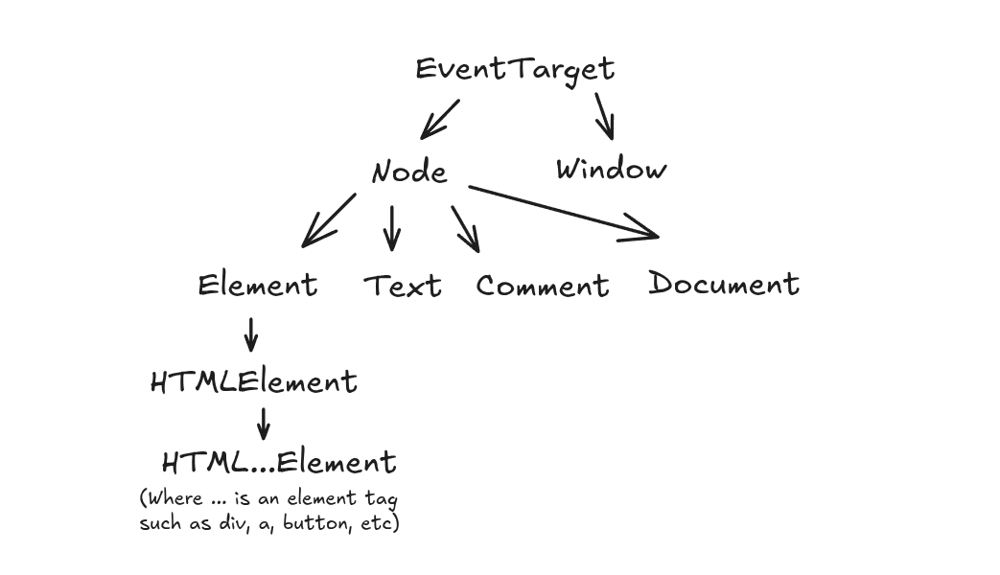

The Basics
Firstly, to understand what exactly DOM manipulation means, I'll have to unabbreviate "DOM", which is the Document Object Model. What is the DOM? It's an interactable JavaScript object that acts as an API for us to fiddle with the HTML elements and their attributes without directly editing the HTML file itself.
One of the simplest ways to do that is via querying the document object and editing the classList. The classList
is a property of a queried element that allows direct access to its class="" attribute like so:
const heading = document.querySelector('h1');
heading.classList.remove('old_class');
heading.classList.add('new_class');
// Below will disable/enable class based on current state
heading.classList.toggle('new_class');
On top of this, there is also event listening. Events in JavaScript are listeners for specific actions such as pressing a key or clicking a button. When the event of clicking a button is detected the element associated with that event gets fired and performs any additional functionalities. For example:
const button = document.querySelector('.modal-button');
button.addEventListener('click', () => {
openModal();
};
In the above example I have selected a button with a class of modal-button. From there,
I have added an event listener that listens to a click event, and once it is detected, the function that handles
opening up a modal is called.
The DOM API Hierarchy
Fundamentally, most objects in the DOM API are a node. To be more precise, they all have node as a parent. So what is a node?
It's a representation of whatever is on an HTML document, with Element, Comment, Text, and Document
all being represented with a Node parent. A single HTML file typically has all of these various nodes under the file's main NodeList.
Additionally, nodes share a sibling object which is known as the window object. This handles global properties and functions that deal with the browser's
window itself. Lastly, both the node and window object can have an even higher parent if there is an event attached to them. This parent is the
EventTarget. Recall the example event listener we made earlier. See where the () => { } part of the code is? Typically, we can pass e as a paremeter
to the function, where e represents an event. You can then access the EventTarget property of the event via e.target. The importance of this
will be explained later, but for now I wanted you to be aware of it.
For a simple visualization I have made a sketch below:
